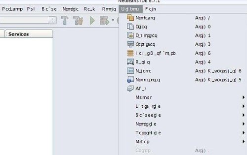
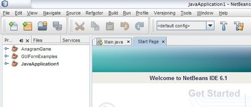
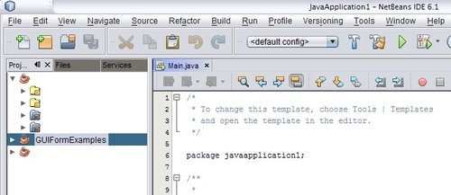

NetBeans: problemas con el menú
Si tenes el NetBeans (u otro programa de Java, bajo Windows), lo inicias y tenes unos caracteres raros/extraños que no son de un idioma, como:

Se arregla sólo cambiando el Look & Feel:

Y parece que solo da problemas el Look and feel de GTK (com.sun.java.swing.plaf.gtk.GTKLookAndFeel)
Cómo se arregla
- Ir a la carpeta de instalación del NetBeans. (ejemplo:
C:\Archivos de programa\Netbeans). - Entrar a la carpeta
etc. - Abrir el archivo
netbeans.conf. - Por la linea 6 aproximadamente (donde dice
netbeans\_default\_options, el primero), poner antes de cerrar la":--laf javax.swing.plaf.metal.MetalLookAndFeel - Guardar y cerrar.
- Reiniciá la IDE.
MetalLookAndFeel no es el único que funciona, también podes usar "Nimbus" con: com.sun.java.swing.plaf.nimbus.NimbusLookAndFeel:

Fuente: Sun blogs
Que paciencia que tenés :P
Programar=paciencia :P
En serio? yo siempre me desespero :P